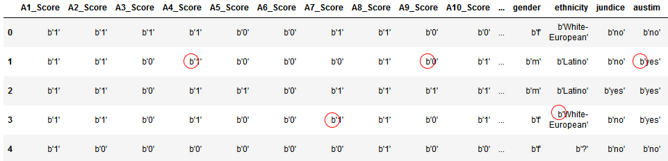
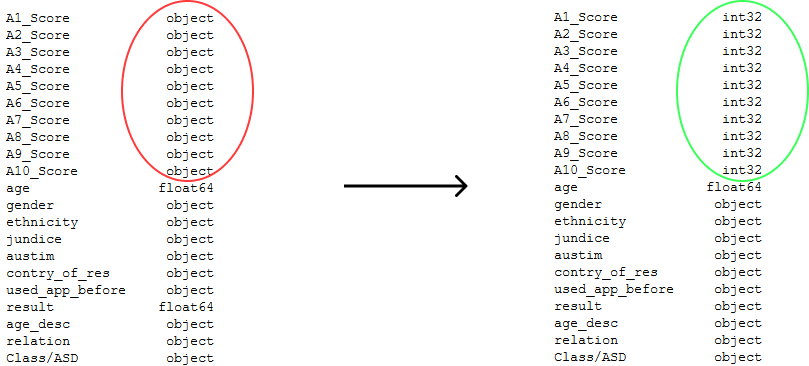
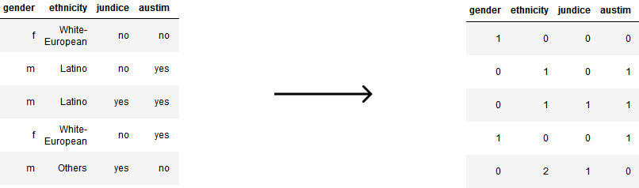
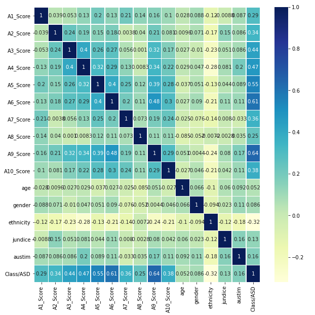

About The
Dataset
Cleaning The
Dataset
Correlation Matrix
Logistic Regression +
Genetic Algorithm
Decision Tree Classifier
+ Genetic Algorithm
The dataset was not clean and some columns had irregular values like a ‘b’ in their value as you can see below

After Cleaning the data we can see that the ‘b’ is removed from all the values and we can work on the data
After scanning the data we found that the columns ‘ethnicity’ and ‘relation’ had missing values and they totaled to 190
so we dropped those rows from the dataset so the dimensions change from
(704, 21) to (514, 21)
All the numbers were stored as a string so we converted them to int

Then we enumerated attributes like ethnicity, austim, jundice and gender which concluded our data cleaning

We used the correlation matrix to find out the relation between the attributes

To select the most ‘related’ values we kept the threshold value as 0.3 and got the following columns that affect the
target value the most
Attribute
Correlation Value
We split the dataset into train and test in the ratio 7:3 and passed it through the Logistic Regression and got the
following accuracy
We split the dataset into train and test in the ratio 7:3 and passed it through the Logistic Regression and got the following accuracy
As you can see that the value did not change at all after applying the genetic algorithm
We split the dataset into train and test in the ratio 7:3 and passed it through the Logistic
Regression and got the
following accuracy
We split the dataset into train and test in the ratio 7:3 and passed it through the
Logistic Regression and got the following accuracy
We can see a significant increase in the accuracy after applying the genetic algorithm